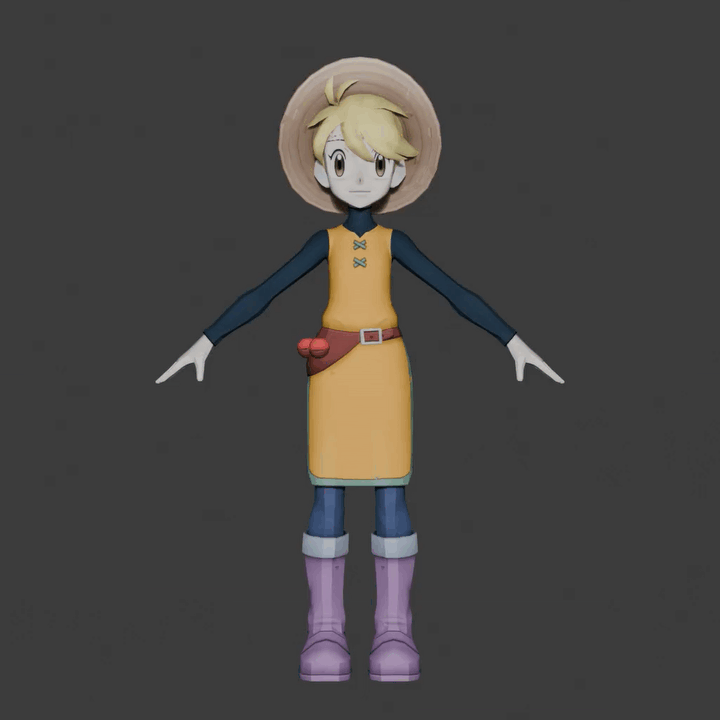

A fully Python implementation of my favorite minigame from Persona 2: Innocent Sin's Mu Continent: The blackjack-like Join Forces. Supports just about every feature from the PSP release.
JavaScript game I created with a group for a game jam in middle school. I wrote all the code for this project, and we ended up winning the competition!

Example level created for a class project in Hammer 5.x.
A tower I bought for $10 at Scrap Exchange. As the title implies, I have no idea the brand of the case, so it's Mystery Tower. I replaced the CMOS, added a SATA SSD, diagnosed a fatal CPU error with a POST analyzer, replaced the CPU with a Pentium 4 HT, added 512MB DDR2 RAM, added a heatsink/cooler with new paste, and added a new optical drive. Currently runs Windows XP.
A Dell Dimension 4100 that miraculously somehow still functioned after spending 20 years in a non-climate controlled Louisiana attic. Replaced CMOS and replaced IDE hard drive. While I waited for my hard drive to arrive, I tested booting FreeDOS from CD, but it now runs Windows XP.
Modded Nintendo consoles. On the New 3DS LL, installed Luma3DS and English firmware, as well as TwilightMenu++ to run DS games and hShop for content management. On the WiiU, installed Aroma and Tiramisu, as well as NUSspli for content management, a USB hard drive for storage, vWii mod injection, and romhacks.
I'm known for my amazing organizing skills and never have cluttered drawers.